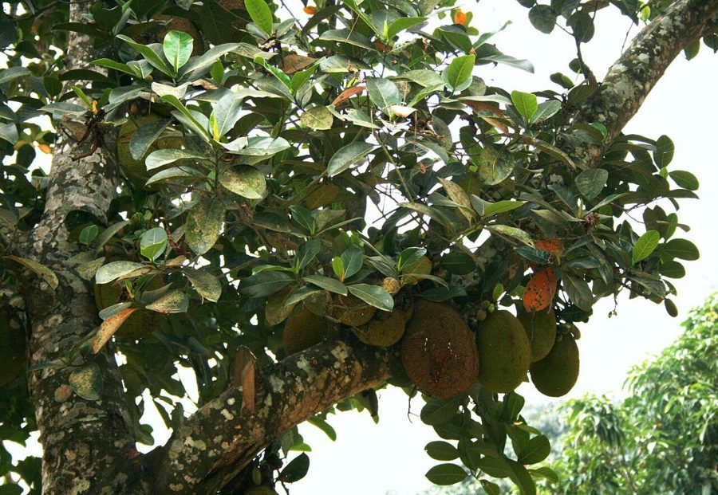

कटहलJackfruit
Artocarpus heterophyllus · Moraceae · FLR-0065

- Scientific name
- Artocarpus heterophyllus Lam.
- Family
- Moraceae
- Hindi
- कटहल
- Status here
- cultivated
- IUCN
- LC
When to look कब देखें
Present all year.
कटहल / Jackfruit
Artocarpus heterophyllus Lam. — Moraceae
कटहल (फनास / जैकफ्रूट) — पूर्वी उत्तर प्रदेश के ग्रामीण उद्यानों, बागों और खेतों के आहातों में व्यापक रूप से उगाया जाने वाला एक बड़ा, सदाबहार (evergreen) और अत्यधिक उपयोगी फल देने वाला पेड़ है। यह दुनिया का सबसे बड़ा पेड़ पर उगने वाला फल (world's largest tree-borne fruit) है, जिसका एक अकेला फल 35 किलोग्राम तक भारी हो सकता है। पकने पर इसका फल मीठा, तीव्र सुगंधित और पीले रंग के गूदे (sweet yellow flesh) वाला होता है। हालांकि, पूर्वी उत्तर प्रदेश में इसका सबसे बड़ा महत्व कच्चे हरे फल (kathal) के रूप में है, जिसे सब्जी और अचार बनाने के लिए बड़े पैमाने पर उपयोग किया जाता है। इसकी रेशेदार बनावट के कारण इसे यहाँ 'शाकाहारी मांस' (vegetarian meat of eastern UP) भी कहा जाता है। इसके कच्चे फलों और तनों को काटने पर एक गाढ़ा, अत्यधिक चिपचिपा सफेद दूध (sticky white latex) निकलता है, जो इसकी पहचान का मुख्य हिस्सा है।
Quick Identification त्वरित पहचान
| Feature | Description |
|---|---|
| Tree habit | Large, evergreen tree up to 15–20 meters high, with a dense, rounded, dark green canopy |
| Leaves | Alternately arranged, thick, leathery, dark green, glossy, and oval (elliptic), measuring 10–20 cm |
| Flowers | Tiny, unisexual flowers clustered on club-shaped cylindrical structures emerging directly from the trunk and main branches |
| Fruit | Massive, oblong-cylindrical compound fruit (sorosis), covered with short, blunt, green-yellow spines |
| Latex | Thick, sticky, white sap (milky latex) exuded from all parts (stems, leaves, unripe fruit) when cut |
Field tip: Look in village groves. Search for a large evergreen tree with very dark green, thick leaves. Watch for huge, spiny green fruits hanging directly from the main trunk or thick branches (cauliflory) rather than from thin twigs. The trunk bark is rough and dark brown.
Morphology आकारिकी
Biometrics (typical measurements of mature trees in the northern Indian plains):
| Measurement | Range |
|---|---|
| Tree height | 15–20 m |
| Trunk diameter (DBH) | 40–80 cm |
| Leaf length | 10–20 cm |
| Fruit length | 30–90 cm |
| Fruit diameter | 20–50 cm |
| Fruit weight | 10–35 kg |
Trunk and Bark: The trunk is straight with a dark brown, rough, slightly peeling bark. The wood is grain-rich and turns bright yellow when freshly cut, later aging to a dark mahogany-brown.
Foliage: Alternate, elliptic or obovate leaves. Young leaves sometimes have 1 or 2 deep lobes, while mature leaves are entire, smooth, and glossy green.
Flowers: The species is monoecious. The male and female flowers are borne on separate cylindrical heads. The male heads are smaller and emerge on thin twigs, while the female heads are larger and emerge directly from the main trunk or old branches.
Fruit: A giant compound fruit (sorosis) formed by the fusion of hundreds of individual flowers. The edible parts are the yellow, fleshy perianth sheaths that surround the large, starchy seeds.
Associated Species / Interactions संबंधित प्रजातियाँ
- Seed dispersers: The ripe, highly fragrant fruit attracts large mammals, including fruit bats (Indian Flying Fox), rhesus macaques, and wild boars, which eat the flesh and disperse the seeds.
- Insects: The sweet sap and decaying fruits attract various flies, beetles, and wasps.
- Foliage insects: The thick leaves are fed on by the caterpillars of the Common Map butterfly (Cyrestis thyodamas).
Pests and Diseases कीट और रोग
- Jackfruit Shoot and Fruit Borer: Diaphania caesalis caterpillars bore into the tender shoots and young fruits, causing them to rot and drop off.
- Brown Bud Rot: Caused by the fungus Rhizopus artocarpi, which infects the male flower buds and young fruits, covering them in a black, fuzzy mold and causing rot.
- Scale Insects: Small scale bugs suck sap from leaf veins, secreting honeydew that leads to black sooty mold.
Traditional and Ethnobotanical Use पारंपरिक और नृवंशवनस्पति उपयोग
- Vegetarian Meat Preparation: The unripe green fruit is peeled (using mustard oil on hands and knife to prevent the sticky latex from sticking), cut into chunks, and cooked in a rich, spicy gravy (kathal ki sabji).
- Ripe Fruit Consumption: The yellow, ripe fruit segments (khaja) are eaten fresh as a sweet fruit. The seeds are collected, boiled, or roasted in hot sand, and eaten as a nutty, potato-like snack.
- Sticky Latex Glue: The thick white latex is collected from cuts in unripe fruits, mixed with oil, and traditionally used as a natural adhesive to trap small birds or patch leaks in household utensils.
- Digestive Decoction: The leaves are boiled in water to make a warm decoction, which is consumed in traditional folk medicine to manage diabetes and improve digestion.
Expected Locally स्थानीय रूप से अपेक्षित
Not a field record. Written from published accounts for eastern Uttar Pradesh. No confirmed local sighting yet — if you have seen it, that is what the atlas needs.
अभी तक स्थानीय पुष्टि नहीं। यह विवरण प्रकाशित स्रोतों से है, किसी अवलोकन से नहीं।
A highly valued fruit and vegetable tree planted in every traditional farmstead across the Basti district. They are regularly observed in the Harraiya, Vikramjot, and Basti blocks. Residents report that mature jackfruit trees planted close to houses provide excellent shade during hot summer days. The harvesting season of unripe jackfruit in May and June corresponds with local wedding feasts, where kathal is a mandatory dish.
Distribution वितरण
Global range: Native to the rainforests of the Western Ghats of India; now cultivated widely across tropical Asia, East Africa, South America, and the Caribbean.
In India: Cultivated throughout all states, particularly in the southern and eastern plains.
In Uttar Pradesh: Abundant in all Gangetic plains and orchard zones.
In Basti district / eastern UP: Widespread across all agricultural blocks.
Research Questions शोध प्रश्न
Anyone can investigate these | कोई भी इन प्रश्नों की जाँच कर सकता है
- How many individual yellow pulp segments are typically found inside a mature 15 kg Jackfruit in Basti? — Count and record segments during harvest.
- Does rubbing mustard oil on hands prevent Jackfruit latex from sticking better than using coconut oil? — Test and compare different oils.
- What is the average weight of Jackfruits harvested from the main trunk versus those from thick lower branches? — Track fruit sizes.
- Which mammals are the primary visitors to a ripening Jackfruit tree at night in your village? — Set up night observations.
- Does the brown bud rot disease increase in Jackfruit trees during years with high pre-monsoon rainfall in Basti? / क्या बस्ती में मानसून-पूर्व भारी बारिश वाले वर्षों में कटहल के पेड़ों में बड रॉट (Bud Rot) रोग का प्रकोप बढ़ जाता है? — Compare annual rain and disease rates.
Similar Species मिलती-जुलती प्रजातियाँ
| Species | How to tell apart | comparison |
|---|---|---|
| Monkey Jack / Barhal (Artocarpus lacucha) | Much smaller tree; fruit is small (5–10 cm), irregular, yellow-orange when ripe; leaves are velvety beneath | बड़हल — छोटा पेड़, छोटा खट्टा-मीठा फल |
| Breadfruit (Artocarpus altilis) | Leaves are massive and deeply lobed like a hand; fruit is smaller, round, lacks spines; rarely grown in UP | विलायती कटहल — कटे हुए बड़े पत्ते, बिना कांटे का फल |
| Mulberry / Shahtoot (Morus alba) | Small tree; fruit is a small, elongated berry (2–3 cm); leaves are thin and serrated | शहतूत — छोटा फल, पतले आरीदार पत्ते |
Field rule: Large evergreen tree with leathery dark green leaves, exuding sticky white latex when cut, bearing massive spiny green-yellow fruits directly on the main trunk, is the Jackfruit.
Taxonomy & Classification वर्गीकरण
Original description. Jean-Baptiste Lamarck described the Jackfruit as Artocarpus heterophyllus in 1789 in his Encyclopédie Méthodique, Botanique (Vol. 3, p. 209). The type locality was listed as India. The genus name Artocarpus is derived from the Greek artos (bread) and karpos (fruit). The specific name heterophyllus is Greek for different leaves, referencing the variation between lobed young leaves and entire mature leaves.
Subspecies. Monotypic — no subspecies are currently recognised.
Family and order placement. Placed in the order Rosales, family Moraceae (mulberry or fig family), tribe Artocarpeae.
Phylogenetic notes. The genus Artocarpus contains approximately 60 species of trees, characterized by the production of milky latex and specialized inflorescences that fuse into large compound fruits.
IUCN status rationale. Assessed as Least Concern (LC) by the IUCN Red List (assessed by the IUCN SSC Global Tree Specialist Group). It is widely cultivated and secure globally.
Photo Gallery फोटो गैलरी
References संदर्भ
- Lamarck, J.-B. (1789). Encyclopédie Méthodique, Botanique. Roret, Paris, Vol. 3, p. 209. [original description]
- Brandis, D. (1906). Indian Trees. Archibald Constable & Co., London.
- Troup, R. S. (1921). The Silviculture of Indian Trees. Oxford University Press.
- Elevitch, C. R. & Manner, H. I. (2006). Artocarpus heterophyllus (jackfruit). Species Profiles for Pacific Island Agroforestry.
- World Flora Online (2024). Artocarpus heterophyllus taxon details.
- GBIF Occurrence Data — Artocarpus heterophyllus, India (2010–2025).
Source file: species/flora/trees/jackfruit.md